Context
The training workshop organized by the Atlantic International Research Centre (AIR Centre) aims at developing the computer programming skills of those working on Earth Observation, including the members of the and other laboratories.
To stimulate collaboration beyond the training, the workshop is in person (full week). However, due to the high level of interest, remote participation is also possible. Remote participants will be able to watch the sessions live. Remote active participation is possible but limited to text chat.
The topics covered include acquisition, processing, visualisation, and classification of Earth Observation data, using the Julia programming language.
The training workshop will emphasize practical activities including the use of datasets, libraries/packages, automated workflows, Artificial Intelligence (AI), and classification algorithms. Theory-oriented sessions will introduce the concepts and hands-on activities.
Background
The open-source Julia language is relatively recent. It was created at the Massachusetts Institute of Technology (MIT), first released in 2012, and reached the v1.0 milestone in 2018. Julia has a vocation for high-performance scientific computing, making it today’s ideal choice to work on resource-intensive datasets such as the Earth Observation ones.
Mutual benefits expected to arise from the collaboration of the AIR Centre and the Julia community include:
- Capacity building for invited institutions.
- Create collaboration opportunities between the participants and speakers.
- Create the potential to extend the Portuguese contribution to the scientific community.
- Bringing together the two communities around Julia: developers and end-users.
- Opening new avenues for collaboration on both software and science.
- Contributing to strengthening the open source / science community.
- Creating an axis of collaboration to study the Azores region using Earth Observation, numerical models, and data products.
- Finding new prospective contributors to Julia packages; helping developers build up their user community; identifying needs and desired new features.
- Providing additional exposure for the products and activity of the AIR Centre; via US and EU growing Julia communities.
Program
The workshop will encompass different levels of expertise, from beginner to advanced, with a focus on Earth Observation concepts and programming skills.
-
Plenary sessions - Cross-disciplinary training focused on theory and high-level concepts. These include the presentation of novel EO datasets i.e. satellite data, ocean models, and model products; processing & visualization techniques as well as available tools and packages. The first goal is to learn about new datasets and sources, libraries, packages, techniques, and implementation details. A secondary aim of this module is to identify gaps in the EO domain and opportunities to close those gaps using the Julia programming language.
-
Hands-on sessions - The modules will focus on concrete goals in data acquisition, processing & visualization techniques for example. They are designed to bridge between concepts and real-life applications through extended tutorials. Participants will get an introduction, through these tutorials, to performing common geospatial tasks using Julia geospatial tools and common geospatial libraries and packages.
-
Hackathons - Session that brings together Julia developers to enhance collaboration on EO applications and software development. The goal is to organize the last module of the day in the common room and enable everyone to work on intermediate & advanced level aspects according to their specific interests.
-
Expert hour - Experts remain in the room for informal conversations and discussions with the presencial participants.
Please be aware that online sessions will not be available on Friday, as this day is specifically designed for in-person participation only.
Day 1 - Monday 05.01.2026
Timezone: UTC -1; GMT-1
09:00 – 9:15 Welcome speech and program presentation. Mr. Joao Pinelo - AIR Centre
9:15 – 9:30 Opportunities and Challenges for Data Science. Mr. Joao Pinelo
09:30 – 10:00 Julia at Scale: Experiences on TACC Supercomputers. Mr. Amit Ruhela
10:00 – 10:20 Coffee break.
11:00 – 11:15 Internal Waves Service. Ms. Adriana Ferreira
11:15 – 11:30 Machine Learning Challenge - IWS. Mr. Arun Shukla & Ms. Adriana Ferreira
11:30 – 12:00 Zarr for handling large N-Dimensional Arrays on disk. Mr. Felix Cremer
12:00 – 13:00 Lunch break.
13:00 – 13:25 The AIR Centre Programs Mr. Miguel Miranda, Executive Director AIR Centre
13:25 – 14:00 Strategies for deploying Julia programs to production, on cloud or on prem. Mr. Avik Sengupta
14:00 – 14:30 Equation-Based Geoscientific Modeling and Surrogate Modeling. Mr. Christopher Tessum
14:30 – 15:00 Interactive climate modelling. Mr. Milan Klöwer
15:00 – 15:30 Coffee break.
15:30 – 16:00 JuliaGeo Ecosystem updates Mr. Anshul Singhvi
16:00 – 17:00 Expert hour.
18:00 – 20:00 Networking Cocktail.
Day 2 - Tuesday 6.01.2026
Timezone: UTC -1; GMT-1
09:00 – 10:00 InSAR theory, interferogram processing, and its application to earth science studies. Ms. Jingyi "Ann" Chen
10:00 – 10:30 Coffee break.
10:30 – 11:30 InSAR Workshop. Ms. Jingyi "Ann" Chen & Mr Arun Shukla
11:30 – 12:00 Building interactive Visualizations with Bonito & Makie in the age of AI. Mr. Simon Danisch
12:00 – 13:00 Lunch break.
13:00 – 14:00 Exploring METOP data with MetopDataset.jl Mr. Simon Lupemba
14:00 – 14:30 Interactive analysis of Large Scale geospatial data format. Mr. Felix Cremer
14:30 – 15:00 Julia on trial: fitting in our tech radar. Mr. Martijn Visser
15:00 – 15:30 How our minds process the Climate Crisis. Ms. Tania Dinis
15:30 – 16:00 Coffee break.
16:00 – 17:00 Expert hour.
Day 3 – Wednesday 7.01.2026
Timezone: UTC -1; GMT-1
09:00 – 10:00 A Hands-on Introduction to Applied Scientific Machine Learning. Mr. Chris Rackauckas
10:00 – 10:20 Coffee break.
10:20 – 12:00 Accelerating Modeling and Simulation with Specialized Code Agents. Mr. Chris Rackauckas
12:00 – 13:00 Lunch break.
13:00 – 17:00 Spontaneous group activities.
Day 4 – Thursday 8.01.2026
Timezone: UTC -1; GMT-1
09:00 – 9:40 The HorizonEarth.jl coupler in ocean/seaice models Mr. Simone Silvestri
09:40 – 10:20 Inferring the ocean subsurface using generative AI Mr. Andre Souza
10:20 – 10:40 Coffee break.
10:40 – 11:20 Model-data fusion for the Azores region and the tropical Pacific Gaël Forget, Adriana Ferreira, Jorge Magalhães, João Pinelo, José Silva
11:20 – 12:00 Generative Deep Learning for inverse problems in oceanography & Handling dates with CFTime.jl Mr. Alexander Barth
12:00 – 13:00 Lunch break.
13:00 – 13:40 Hands-on Session : the HorizonEarth.jl coupler for global ocean/seaice modeling Mr. Simone Silvestri
13:40 – 14:20 Hands-on Session : Digital Twins for Ocean Robots Mr. Gaël Forget
14:20 – 14:40 Coffee break.
14:40 – 15:20 Hands-on Session : Training Diffusion Models for Climate Studies in Julia Mr. Andre Souza
15:20 – 16:00 Hackhathon : Marine Heat Wave Tracking and Analysis Mr. Gaël Forget
16:00 – 17:00 Expert hour.
Day 5 – Friday 9.01.2025 (In-person only)
Timezone: UTC -1; GMT-1
09:00 – 10:00 State of GeoDataFrames.jl Mr. Maarten Pronk
10:00 – 10:20 Coffee break.
10:20 – 12:00 Hackathon Session One Mr. Arun Shukla
12:00 – 13:00 Farewell lunch.
13:00 – 14:00 Speedy Weather - Sailor Problem Mr. Milan Klöwer
14:00 – 15:30 Hackathon Session Two
15:30 – 16:00 Hacked a ton: week's spontaneous outcomes.
16:00 – 16:15 JuliaEO26 Farewell Speech. Mr. Joao Pinelo
Speakers
The following speakers have been selected from the Julia community to participate in this training event. The speakers involve a mix of seasoned and young/aspiring scientists. The selection was based on the level of skill and commitment demonstrated, with contributions to the EO software packages which are most needed for AIR Centre’s current work and future development.
Additionally, there are a small group of scientists from the AIR Centre or related to its activities.
Confirmed Speakers (alphabetically)
Adriana Ferreira
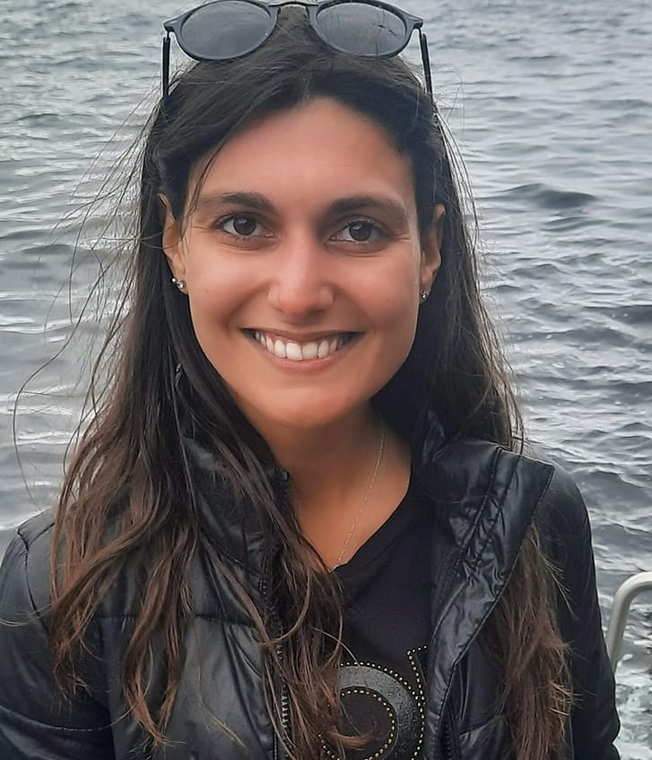Adriana Ferreira recently joined the AIR Centre as a Project Developer, following the completion of her PhD in Surveying Engineering at the Faculty of Sciences, University of Porto. Her work has primarily focused on ocean applications, with particular expertise in submesoscale processes, such as short-period internal waves. Adriana’s research combines satellite observations, in situ data, oceanographic models, and, more recently, machine learning techniques to advance understanding in this field.
Alexander Barth
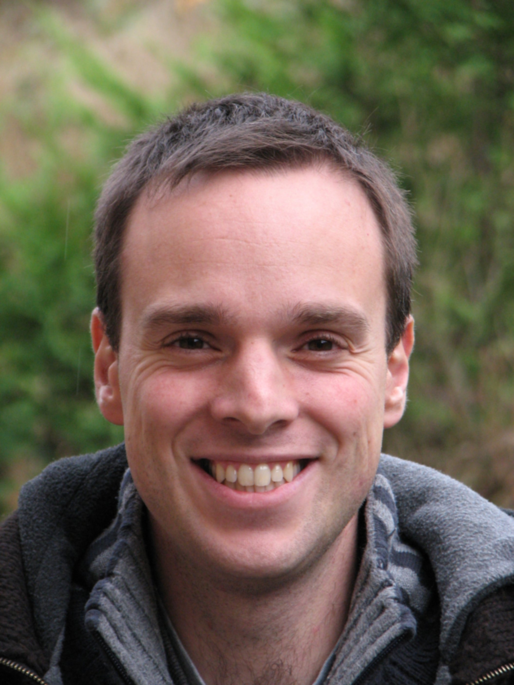Alexander Barth is an associate professor at the GeoHydrodynamics and Environment Research (GHER) group, of the University of Liège (Belgium). He obtained his PhD in 2004 at the University of Liège on data assimilation in nested ocean models. After his post-doc at the College of Marine Science of the University of South Florida, he worked on variational interpolation with DIVA and DIVAnd and he is principal investigator of several European projects aiming to apply and improve these tools for generating climatologies based on in situ observations. Recently he also investigated the use of machine learning techniques with ocean remote sensing data.
Andre Nogueira Souza
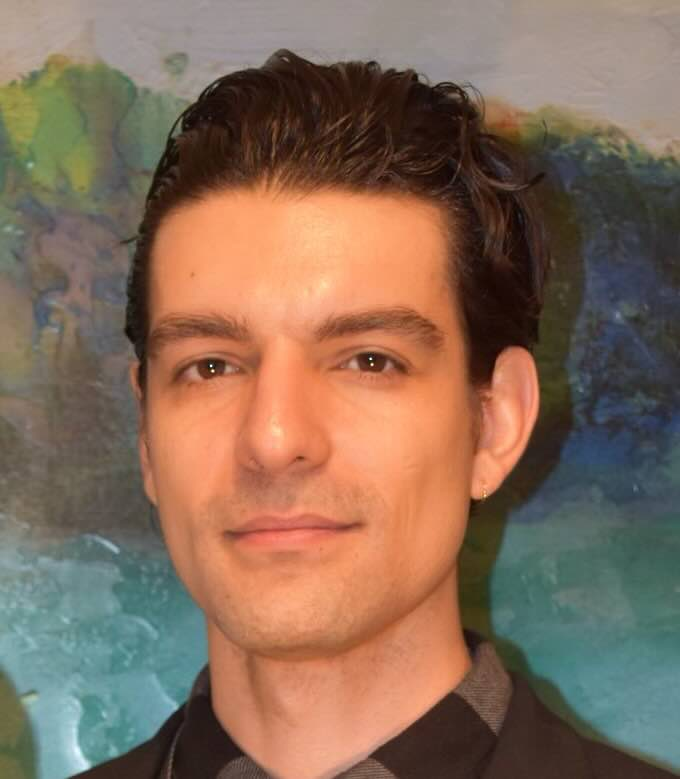Andre Souza is a Senior HPC Engineer and AI Scientist at Rescale and a Visiting Scientist at MIT, working at the intersection of high-performance computing, applied mathematics, and machine learning for engineering and physics applications. His research interests include generative and physics-informed machine learning, stochastic processes, and scalable numerical methods, with a particular emphasis on data-driven emulation.
Amit Ruhela

Dr. Ruhela joined the HPC group at TACC in January 2020. Before TACC, he was working in the Network-Based Computing Laboratory at The Ohio State University. He has more than 17 years of R&D experience in HPC, Social Computing, and Telecommunication. He is currently working on novel designs and algorithms in parallel communication to deliver the best performance and scalability for scientific and engineering applications. He has also conducted large scalability studies and performance evaluations of HPC applications on leading supercomputers. Dr. Ruhela received his Ph.D. degree from IIT Delhi and B.Tech degree from NIT Kurukshetra, both in Computer Science. He has worked closely with researchers from The Ohio State University, NICTA Australia (now called Data61), IIT-D, and C-DOT Delhi. He has worked with computational scientists and researchers from TACC, SDSC, OSC, UMH, LLNS, University of Oregon, NCAR, and EPFL on NSF and XSEDE proposals.
Anshul Singhvi
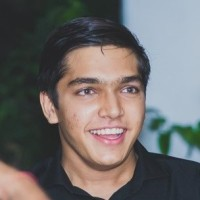Contributor to the Makie.jl data visualization library and the author of its geospatial extension GeoMakie,jl. Also an author of the GeometryOps.jl package for 2D geographic geometry processing, and contributor to many other packages in the JuliaGeo ecosystem. Interested in geospatial problems and how principles from other fields can be applied to solve them!
Arun Shukla
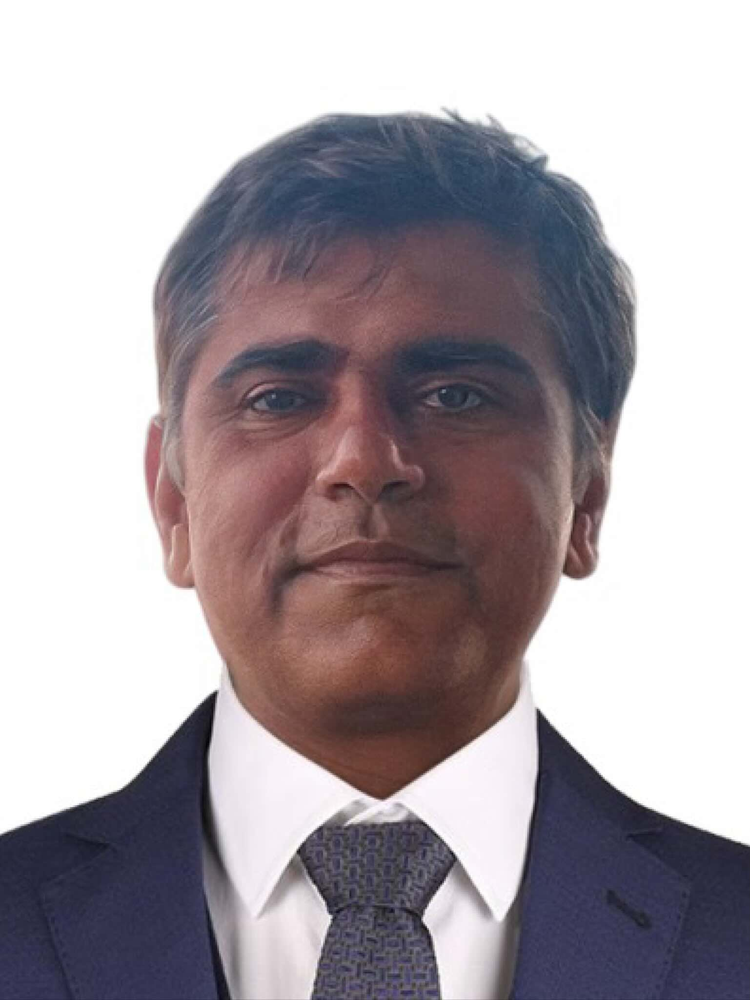Arun Kumar Shukla is a Data Science Developer at the Atlantic International Research Centre (AIR Centre), working with Julia, scientific machine learning, and SAR-based Earth observation. His research spans hybrid SAR–optical classification, post-fire impact assessment, burn-severity mapping, and the study of forest-fire dynamics across regions such as Mizoram and the Indo-Burma biodiversity hotspot. He also works on machine-learning approaches for environmental monitoring, land-use/land-cover analysis, and Earth-observation data processing. His scientific contributions appear in journals such as Earth and Space Science, Remote Sensing Applications, Environmental Science and Pollution Research, and AGU proceedings.
Avik Sengupta
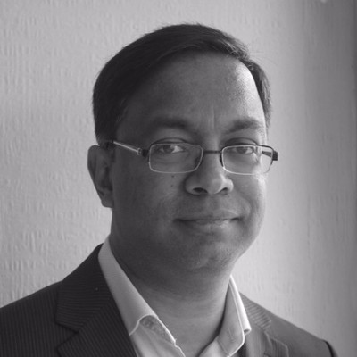Avik Sengupta is the VP of Engineering at JuliaHub, where he's responsible for building their cloud compute and simulation platform. He is a contributor to Julia and maintainer of several Julia packages, as well as the author of "Julia High Performance", Avik has previously created complex trading systems for the world's leading investment banks.
Chris Rackauckas
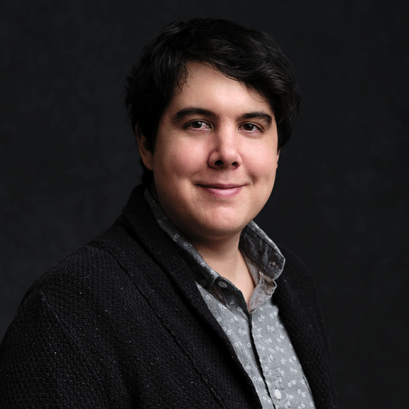Research Affiliate and Co-PI of the Julia Lab at the Massachusetts Institute of Technology Director of Modeling and Simulation at Julia Computing and Creator / Lead Developer of JuliaSim Director of Scientific Research at Pumas-AI and Creator / Lead Developer of Pumas Lead Developer of the SciML Open Source Software Organization.
Christopher M. Tessum
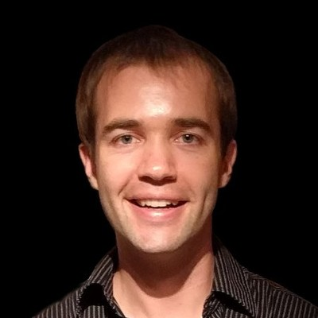Christopher Tessum is an Assistant Professor of Civil and Environmental Engineering at the University of Illinois at Urbana-Champaign. His research assesses air pollution-related effects of human activity, focusing on mechanistic modeling of outdoor air pollution and its health impacts, quantifying inequities in the distribution of those impacts, and proposing and testing solutions. He studies the relationships between emissions, human activities that cause them, and the resulting health impacts, and develops modeling capabilities to enable these types of analyses.
Felix Cremer

Felix Cremer received his diploma in mathematics from the University
of Leipzig in 2014. In 2016 he started his PhD study on time series
analysis of hypertemporal Sentinel-1 radar data.
He is interested in the use of irregular time series tools on Synthetic
Aperture Radar data to derive more robust information from these data
sets.
He worked on the development of deforestation mapping algorithms and on
flood mapping in the amazon using Sentinel-1 data.
He currently works at the Max-Planck-Institute for Biogeochemistry on
the development of the JuliaDataCubes ecosystem in the scope of the NFDI4Earth
project. The JuliaDataCubes
organisation provides easy to use interfaces for the use of multi
dimensional raster data.
Gaël Forget
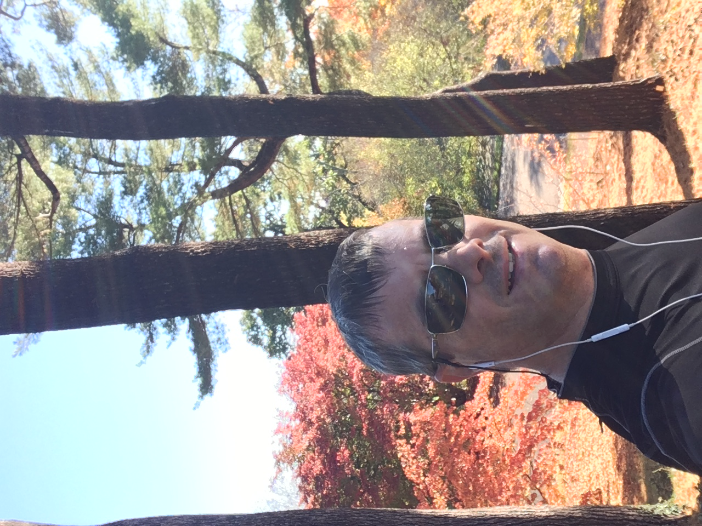Currently works as a research scientist at the Massachusetts Institute of Technology (MIT) in the Department of Earth, Atmospheric and Planetary Sciences. Research interests and expertise include ocean modeling, insitu and satellite observations, ocean physics and marine ecosystems, climate change, climatology, and inverse estimation in general (incl. data assimilation, AI/ML, differentiable programming). Creator and leader of the JuliaOcean and JuliaClimate organizations. Lead developer of a series of Julia packages focused on ocean and climate science. These include MeshArrays.jl (JuliaCon18), ClimateModels.jl and MITgcm.jl (JuliaCon21, JuliaCon23), Drifters.jl and OceanRobots.jl (JuliaCon21, JuliaCon23).
Jingyi "Ann" Chen
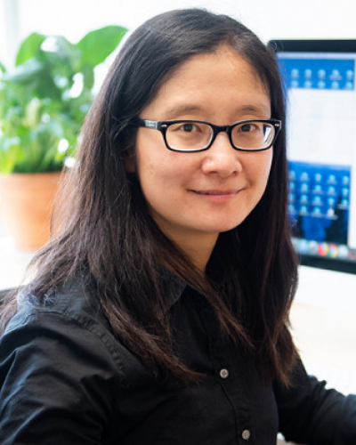Ann Chen has more than 15 years of experience in SAR/InSAR algorithm design for earth system science applications. In 2017, she joined the Department of Aerospace Engineering and Engineering Mechanics at The University of Texas at Austin. Since 2018, she has also served as a faculty member (by courtesy) in the Department of Geological Sciences at UT Austin. She currently leads the Radar Interferometry Group housed in the Center for Space Research. Her group focuses on the development of new satellites, and especially interferometric Synthetic Aperture Radar (InSAR) techniques, for studying natural and induced seismicity, groundwater resources, natural disasters, and permafrost hydrology and carbon storage. She is a senior member of IEEE.
João Gonçalves
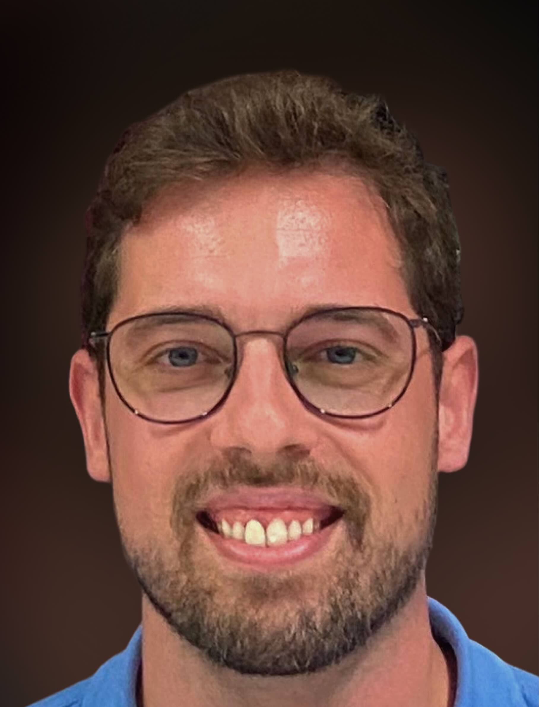João Gonçalves is a tech enthusiast with over a decade of hands-on experience in software engineering and IT ops. A Linux power user, network tinkerer, and software craftsman, he loves nothing more than diving into complex systems and making them run smoother, faster, and smarter. Currently at AIR Centre, João is immersed in the exciting world of high-performance computing (HPC), where he maintains a cutting-edge HPC datacenter, develops innovative software solutions and contributes to impactful projects.
Joao Pinelo
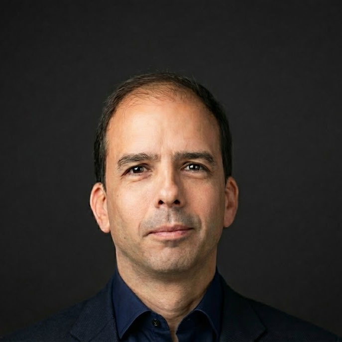I am the Head of Data Science, Cloud Infrastructure and Development at the Atlantic International Research Centre. He has been at the Earth Observation Lab (AIR Centre) - a laboratory of the European Space Agency (ESA) - since 2020, where he is responsible for founding and organising JuliaEO (Global Workshop on Earth Observation with Julia) - editions: 2023, 24, 25, 26; Senior project manager for building and setting up a data centre; Define and manage systems’ architectures for networking, storage and computation of the datacentre, which he set up as a hybrid cloud. He has been responsible for many other projects and developed several real-time web applications for EO data and alert systems. He is the architectiof the IoT network of the Azores, the Atlantic Cloud and the Internal Waves Service, among other.
Maarten Pronk
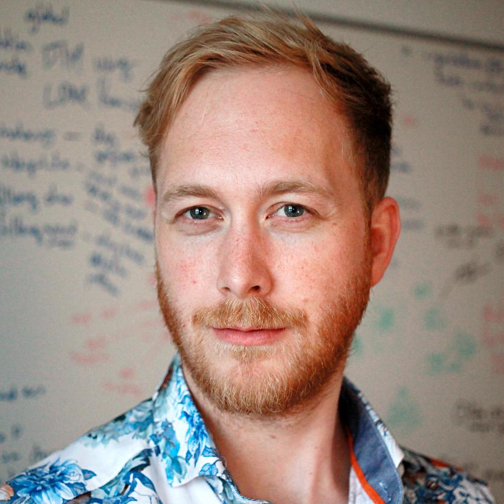Maarten Pronk is a researcher at Deltares and an external PhD candidate at the Delft University of Technology. He holds a MSc in Geomatics and a BSc in Architecture, both from the Delft University of Technology (NL). His research concerns elevation modelling, especially in lowlands prone to coastal flooding. He aims to combine his interests in remote sensing and software engineering for societal impact. He promotes open and reproducible research and is the author of several open-source software packages for handling geospatial data, written in the Julia programming language. His work often involves handling trillions of elevation measurements, requiring a careful selection and design of both spatial storage formats and processing algorithms. Currently he works on applying data from ICESat-2, a LiDAR satellite, on global elevation models.
Martijn Visser
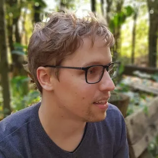Martijn Visser is a hydrologist at Deltares, where he focuses on integrated water resources management, building Ribasim in Julia on top of SciML and JuMP solvers. A key application of this model is for the national water model of the Netherlands. As an early adopter of the Julia programming language he’s been active in the open source community, helping to set up and maintain JuliaGeo and its packages, which aim to make it easier to work with geospatial data in Julia.
Milan Klöwer
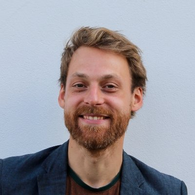Milan Klöwer is a NERC Independent Research Fellow at the University of Oxford. He did his postdoc at the Massachusetts Institute of Technology (MIT) working on climate model development in Julia. He started SpeedyWeather.jl, a global atmospheric model designed as a research playground to develop prototype ideas on machine-learned representations of climate processes and computationally efficient climate models. He also works on low precision computing, data compression and information theory, predictability of weather and climate, and software engineering.
Simon Danisch
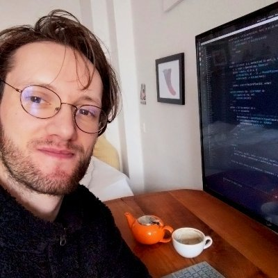Simon Danisch is a software engineer and open source developer specializing in interactive visualization, GPU computing, and graphics infrastructure. He studied Cognitive Science at the University of Osnabrück, where his work on machine learning and computer vision led him to discover Julia in 2012. He created Makie.jl, Julia's high-performance visualization ecosystem, and Bonito.jl, a reactive web framework for building interactive applications. With over a decade of full-time J ulia development experience, he has contributed extensively to the ecosystem through packages including GPUArrays.jl, FileIO.jl, and PackageCompiler.jl.
Simon Kok Lupemba
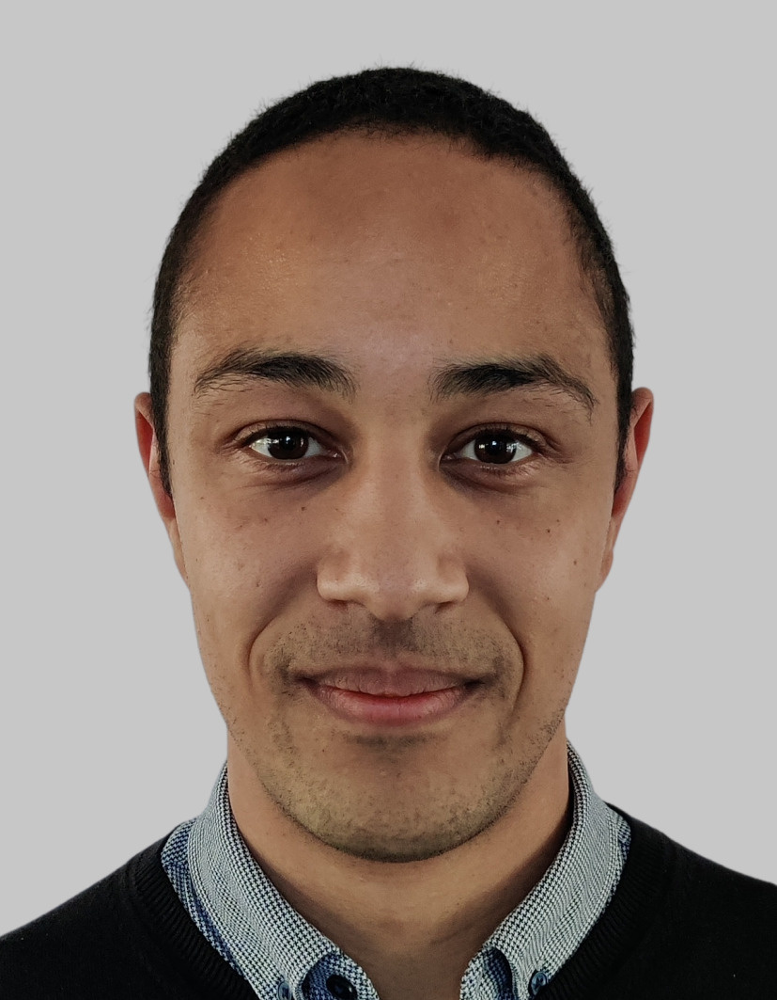Remote sensing scientist at the European Organisation for the Exploitation of Meteorological Satellites (EUMETSAT). He works in the field of scatterometry, maintaining the scientific software used to process data from the current ASCAT instrument. He is also involved in the development of calibration and validation software for Europe’s next scatterometer, SCA, scheduled for launch in 2026. In addition to his scientific work, Simon actively promotes open-source development within EUMETSAT and is the author of MetopDataset.jl, EUMETSAT’s first Julia package.
Simone Silvestri
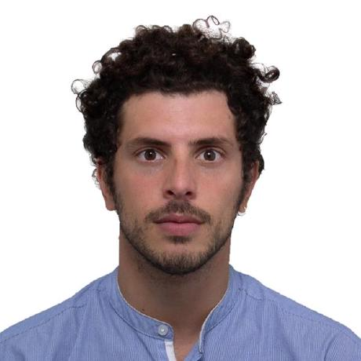Simone did his PhD at TU Delft in the Netherlands where he developed GPU based tools for direct numerical simulation of high temperature turbulent flows and studied the influence of different heat transfer mechanisms on turbulence modulation. He is now a postdoc at MIT where he is developing a new generation ocean model within the climate modeling alliance project.
Tania Dinis
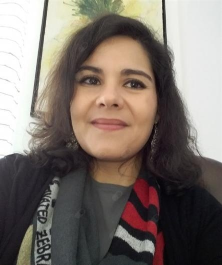Tânia Pereira Dinis has over 20 years of experience as a Clinical Psychologist, Cognitive Behavioural and Integrative Psychotherapist, trainer, entrepreneur and social activist in many causes, namely climate change. In 2020 she became one of the founders of EcoPsi.org, that focuses on the role of Psychology as a tool to understand and deal with the impact of Climate Crisis on mental health and our individual and collective responses to it, aiming to raise awareness and promote better responses, that are informed, adaptative and sustainable to deal with this crisis on individual, organizational and societal levels.
Outcomes
- Capacity building of the AIR Centre and invited institutions.
- Establish relationships with, and expand the Julia community.
- Establish the AIRCentre as an active member of the Julia community.
- Contribute to the development of existing packages.
- Identify opportunities for the creation of new packages.
- Strengthen the scientific community/network around the Atlantic/world.
- Seeding future collaborations.
FAQ
- Is there a fee to attend the workshop? No.
- Do I need to register to attend the workshop?
Yes. If you (your institution) received an invitation, please write to juliaeo@aircentre.org and request access to the form to register.
- Does the AIR Centre provide transfers between the airport and the hotel? Yes, but only for the speakers on Terceira Island.
Location
The workshop will take place at Terceira Mar Hotel, in Angra do Heroísmo, Terceira Island. The hotel is located close to the Historic Centre of the Town of Angra do Heroísmo inscribed on the UNESCO World Heritage List.
Invited speakers will also be hosted at the hotel.
In-person participants who wish to stay at the hotel shall mention the event to get special pricing.
Organizing Committee
-
Joao Pinelo, Adriana Ferreira, Chris Rackauckas, Gael Forget.
Organisers